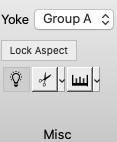

Tab Functions
The Tab section of the Toolbar contains controls
for functions that are active across Viewing
Tabs. Tab Functions are not active
in Chart View.
Yoking
allows one to define groups of tabs or windows that will have
linked rotation, panning, and zooming.
- Yoking Groups are defined between Surface,
Montage,
and All
Views OR between Volume
and All views (yoking is not applied between surfaces and
volumes).
- Surfaces are yoked so that the
corresponding lateral or medial contralateral hemispheres can
be viewed at the same time (e.g. superior temporal gyrus on
the lateral surface can be viewed on the right and left
hemisphere simultaneously).
